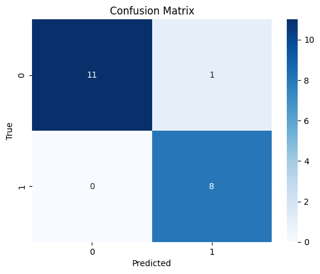

Tugas 9 - Klasifikasi Berita pada Data yang sudah di Reduksi#
Nama : Isnita Widyur Rahmah NIM : 220411100048 Kelas : IF 7A
Link Project : nittyaa99/ppw
Install Library#
!pip install Sastrawi pandas
Requirement already satisfied: Sastrawi in c:\users\isnita\appdata\local\programs\python\python310\lib\site-packages (1.0.1)
Requirement already satisfied: pandas in c:\users\isnita\appdata\local\programs\python\python310\lib\site-packages (2.0.3)
Requirement already satisfied: pytz>=2020.1 in c:\users\isnita\appdata\local\programs\python\python310\lib\site-packages (from pandas) (2023.3)
Requirement already satisfied: python-dateutil>=2.8.2 in c:\users\isnita\appdata\roaming\python\python310\site-packages (from pandas) (2.8.2)
Requirement already satisfied: numpy>=1.21.0 in c:\users\isnita\appdata\local\programs\python\python310\lib\site-packages (from pandas) (1.25.2)
Requirement already satisfied: tzdata>=2022.1 in c:\users\isnita\appdata\local\programs\python\python310\lib\site-packages (from pandas) (2023.3)
Requirement already satisfied: six>=1.5 in c:\users\isnita\appdata\roaming\python\python310\site-packages (from python-dateutil>=2.8.2->pandas) (1.16.0)
[notice] A new release of pip available: 22.2.1 -> 24.3.1
[notice] To update, run: python.exe -m pip install --upgrade pip
Import Library#
import pandas as pd
import re
import pickle
import nltk
import numpy as np
import seaborn as sns
import matplotlib.pyplot as plt
nltk.download('stopwords')
nltk.download('wordnet')
nltk.download('punkt')
from tqdm import tqdm
from nltk.corpus import stopwords
from Sastrawi.Stemmer.StemmerFactory import StemmerFactory
from sklearn.decomposition import TruncatedSVD
from sklearn import preprocessing
from sklearn.feature_extraction.text import CountVectorizer
from sklearn.feature_extraction.text import TfidfVectorizer
from sklearn.linear_model import LogisticRegression
from sklearn.metrics import classification_report, confusion_matrix
from sklearn.metrics.pairwise import cosine_similarity
from sklearn.model_selection import train_test_split
---------------------------------------------------------------------------
ModuleNotFoundError Traceback (most recent call last)
Cell In[2], line 6
4 import nltk
5 import numpy as np
----> 6 import seaborn as sns
7 import matplotlib.pyplot as plt
9 nltk.download('stopwords')
ModuleNotFoundError: No module named 'seaborn'
Load Data#
data = pd.read_csv('crawl_berita.csv')
data
| Judul | Isi | Tanggal | Kategori | |
|---|---|---|---|---|
| 0 | Pertemuan Sri Mulyani-Prabowo Tak Banyak Bahas... | Wakil Menteri Keuangan II Thomas Djiwandono me... | Rabu, 11 Sep 2024 18:10 WIB | Ekonomi |
| 1 | Pebisnis Minta Jokowi Cabut Larangan Jual Roko... | Gabungan pengusaha rokok dan petani tembakau m... | Rabu, 11 Sep 2024 17:31 WIB | Ekonomi |
| 2 | IHSG Melemah Tipis ke 7.760 Sore Ini | Indeks Harga Saham Gabungan (IHSG) ditutup di ... | Rabu, 11 Sep 2024 16:37 WIB | Ekonomi |
| 3 | Rupiah Menguat Rp15.402 per Dolar AS Usai Deba... | Nilai tukar rupiah berada di level Rp15.402 pe... | Rabu, 11 Sep 2024 16:24 WIB | Ekonomi |
| 4 | Sri Mulyani Usai Nonton Timnas-Australia: Teri... | Menteri Keuangan Sri Mulyani berkomentar soal... | Rabu, 11 Sep 2024 15:47 WIB | Ekonomi |
| ... | ... | ... | ... | ... |
| 95 | Hasil Liga 1: PSM vs Persib Sama Kuat | PSM Makassar harus puas berbagi satu angka usa... | Rabu, 11 Sep 2024 17:25 WIB | Olahraga |
| 96 | Jokowi Beri Bonus Rp36,25 Miliar ke Peraih Med... | Presiden Joko Widodo (Jokowi) menyerahkan bonu... | Rabu, 11 Sep 2024 17:13 WIB | Olahraga |
| 97 | Megawati Ungkap Target di Liga Korea: Jadi Pem... | Megawati Hangestri Pertiwi mengungkapkan targe... | Rabu, 11 Sep 2024 16:49 WIB | Olahraga |
| 98 | Media Vietnam: Indonesia Buat Kejutan Besar La... | Media Vietnam memuji performa Timnas Indonesia... | Rabu, 11 Sep 2024 16:24 WIB | Olahraga |
| 99 | Respons PSSI soal 'Penonton Siluman' di Indone... | Anggota Komite Eksekutif (Exco) PSSI Arya Sinu... | Rabu, 11 Sep 2024 16:02 WIB | Olahraga |
100 rows × 4 columns
Pengacakan Urutan Data#
df_acak = data.sample(frac=1).reset_index(drop=True)
df_acak
| Judul | Isi | Tanggal | Kategori | |
|---|---|---|---|---|
| 0 | Kisah Inspiratif Wanita AgenBRILink dalam Mend... | AgenBRILink merupakan perluasan layanan perban... | Rabu, 11 Sep 2024 14:07 WIB | Ekonomi |
| 1 | Pertemuan Sri Mulyani-Prabowo Tak Banyak Bahas... | Wakil Menteri Keuangan II Thomas Djiwandono me... | Rabu, 11 Sep 2024 18:10 WIB | Ekonomi |
| 2 | Harga Minyak Mentah Bangkit, Diterbangkan Bada... | Harga minyak mentah melambung pada perdagangan... | Rabu, 11 Sep 2024 11:40 WIB | Ekonomi |
| 3 | Media Australia: Indonesia, Raksasa Tidur yang... | Media Australia memberikan pujian atas penampi... | Rabu, 11 Sep 2024 13:02 WIB | Olahraga |
| 4 | Megawati Ungkap Target di Liga Korea: Jadi Pem... | Megawati Hangestri Pertiwi mengungkapkan targe... | Rabu, 11 Sep 2024 16:49 WIB | Olahraga |
| ... | ... | ... | ... | ... |
| 95 | Basuki Terbang ke IKN Cek Kesiapan Jelang Joko... | Menteri Pekerjaan Umum dan Perumahan Rakyat (P... | Rabu, 11 Sep 2024 12:03 WIB | Ekonomi |
| 96 | Respons PSSI soal 'Penonton Siluman' di Indone... | Anggota Komite Eksekutif (Exco) PSSI Arya Sinu... | Rabu, 11 Sep 2024 16:02 WIB | Olahraga |
| 97 | Rupiah Menguat Rp15.402 per Dolar AS Usai Deba... | Nilai tukar rupiah berada di level Rp15.402 pe... | Rabu, 11 Sep 2024 16:24 WIB | Ekonomi |
| 98 | Netizen Australia Kecewa Berat setelah Ditahan... | Jika suporter Indonesia begitu gegap gempita m... | Rabu, 11 Sep 2024 14:44 WIB | Olahraga |
| 99 | Berapa Poin Aman Timnas Indonesia untuk Lolos ... | Timnas Indonesia sudah meraih dua poin dari du... | Rabu, 11 Sep 2024 18:50 WIB | Olahraga |
100 rows × 4 columns
Menggabungkan Judul dan Isi#
Tujuannya adalah membantu memberikan hasil yang lebih relevan saat pengguna mencari dokumen berdasarkan keyword
titles = data['Judul']
contents = data['Isi']
data['Isi'] = titles + " " + contents
data['Isi']
| Isi | |
|---|---|
| 0 | Pertemuan Sri Mulyani-Prabowo Tak Banyak Bahas... |
| 1 | Pebisnis Minta Jokowi Cabut Larangan Jual Roko... |
| 2 | IHSG Melemah Tipis ke 7.760 Sore Ini Indeks Ha... |
| 3 | Rupiah Menguat Rp15.402 per Dolar AS Usai Deba... |
| 4 | Sri Mulyani Usai Nonton Timnas-Australia: Teri... |
| ... | ... |
| 95 | Hasil Liga 1: PSM vs Persib Sama Kuat PSM Maka... |
| 96 | Jokowi Beri Bonus Rp36,25 Miliar ke Peraih Med... |
| 97 | Megawati Ungkap Target di Liga Korea: Jadi Pem... |
| 98 | Media Vietnam: Indonesia Buat Kejutan Besar La... |
| 99 | Respons PSSI soal 'Penonton Siluman' di Indone... |
100 rows × 1 columns
Pembagian Data Training dan Data Testing Sebelum Preprocessing#
X = data['Isi']
y = data['Kategori']
# split data 80% training 20% testing
X_train, X_test, y_train, y_test = train_test_split(X, y, test_size=0.2, random_state=42)
print("\nData training (X_train):")
print(X_train.head())
print("\nLabel training (y_train):")
print(y_train.head())
print("\nData testing (X_test):")
print(X_test.head())
print("\nLabel testing (y_test):")
print(y_test.head())
Data training (X_train):
55 Jokowi Beri Bonus Rp36,25 Miliar ke Peraih Med...
88 Media Australia: Indonesia, Raksasa Tidur yang...
26 Sri Mulyani Usai Nonton Timnas-Australia: Teri...
42 Pertemuan Sri Mulyani-Prabowo Tak Banyak Bahas...
69 Alasan STY Mainkan Wahyu 'Hulk' Ketimbang Asna...
Name: Isi, dtype: object
Label training (y_train):
55 Olahraga
88 Olahraga
26 Ekonomi
42 Ekonomi
69 Olahraga
Name: Kategori, dtype: object
Data testing (X_test):
83 Link Live Streaming PSM Makassar vs Persib Ban...
53 Hasil Liga 1: Bali United vs Arema Tanpa Pemen...
70 Berapa Poin Aman Timnas Indonesia untuk Lolos ...
45 Rupiah Menguat Rp15.402 per Dolar AS Usai Deba...
44 IHSG Melemah Tipis ke 7.760 Sore Ini Indeks Ha...
Name: Isi, dtype: object
Label testing (y_test):
83 Olahraga
53 Olahraga
70 Olahraga
45 Ekonomi
44 Ekonomi
Name: Kategori, dtype: object
Mengonversi Semua Huruf Besar Menjadi Huruf Kecil#
def clean_lower(text):
if isinstance(text, str):
return text.lower()
return text
X_train = X_train.apply(clean_lower)
X_test = X_test.apply(clean_lower)
print("Data training setelah diubah menjadi huruf kecil:")
print(X_train.head())
print("\nData testing setelah diubah menjadi huruf kecil:")
print(X_test.head())
Data training setelah diubah menjadi huruf kecil:
55 jokowi beri bonus rp36,25 miliar ke peraih med...
88 media australia: indonesia, raksasa tidur yang...
26 sri mulyani usai nonton timnas-australia: teri...
42 pertemuan sri mulyani-prabowo tak banyak bahas...
69 alasan sty mainkan wahyu 'hulk' ketimbang asna...
Name: Isi, dtype: object
Data testing setelah diubah menjadi huruf kecil:
83 link live streaming psm makassar vs persib ban...
53 hasil liga 1: bali united vs arema tanpa pemen...
70 berapa poin aman timnas indonesia untuk lolos ...
45 rupiah menguat rp15.402 per dolar as usai deba...
44 ihsg melemah tipis ke 7.760 sore ini indeks ha...
Name: Isi, dtype: object
Menghapus Simbol dan Angka dari Teks#
def clean_punct(text):
if isinstance(text, str):
clean_patterns = re.compile(r'[0-9]|[/(){}\[\]\|@,;_]|[^a-z ]')
text = clean_patterns.sub(' ', text)
text = re.sub(r'\s+', ' ', text).strip()
return text
return text
X_train = X_train.apply(clean_punct)
X_test = X_test.apply(clean_punct)
print("Data training setelah dibersihkan:")
print(X_train.head())
print("\nData testing setelah dibersihkan:")
print(X_test.head())
Data training setelah dibersihkan:
55 jokowi beri bonus rp miliar ke peraih medali p...
88 media australia indonesia raksasa tidur yang m...
26 sri mulyani usai nonton timnas australia terim...
42 pertemuan sri mulyani prabowo tak banyak bahas...
69 alasan sty mainkan wahyu hulk ketimbang asnawi...
Name: Isi, dtype: object
Data testing setelah dibersihkan:
83 link live streaming psm makassar vs persib ban...
53 hasil liga bali united vs arema tanpa pemenang...
70 berapa poin aman timnas indonesia untuk lolos ...
45 rupiah menguat rp per dolar as usai debat trum...
44 ihsg melemah tipis ke sore ini indeks harga sa...
Name: Isi, dtype: object
Menghapus Spasi Awal dan Akhir dari Sebuah String#
def _normalize_whitespace(text):
if isinstance(text, str):
corrected = re.sub(r'\s+', ' ', text)
return corrected.strip()
return text
X_train = X_train.apply(_normalize_whitespace)
X_test = X_test.apply(_normalize_whitespace)
print("Data training setelah normalisasi spasi:")
print(X_train.head())
print("\nData testing setelah normalisasi spasi:")
print(X_test.head())
Data training setelah normalisasi spasi:
55 jokowi beri bonus rp miliar ke peraih medali p...
88 media australia indonesia raksasa tidur yang m...
26 sri mulyani usai nonton timnas australia terim...
42 pertemuan sri mulyani prabowo tak banyak bahas...
69 alasan sty mainkan wahyu hulk ketimbang asnawi...
Name: Isi, dtype: object
Data testing setelah normalisasi spasi:
83 link live streaming psm makassar vs persib ban...
53 hasil liga bali united vs arema tanpa pemenang...
70 berapa poin aman timnas indonesia untuk lolos ...
45 rupiah menguat rp per dolar as usai debat trum...
44 ihsg melemah tipis ke sore ini indeks harga sa...
Name: Isi, dtype: object
Mengurangi Jumlah Kata dalam Sebuah Dokumen#
def clean_stopwords(text):
if isinstance(text, str):
stopword = set(stopwords.words('indonesian'))
text = ' '.join(word for word in text.split() if word not in stopword)
return text.strip()
return text
X_train = X_train.apply(clean_stopwords)
X_test = X_test.apply(clean_stopwords)
print("Data training setelah menghapus stopwords:")
print(X_train.head())
print("\nData testing setelah menghapus stopwords:")
print(X_test.head())
Data training setelah menghapus stopwords:
55 jokowi bonus rp miliar peraih medali paralimpi...
88 media australia indonesia raksasa tidur bangki...
26 sri mulyani nonton timnas australia terima kas...
42 pertemuan sri mulyani prabowo bahas makan berg...
69 alasan sty mainkan wahyu hulk ketimbang asnawi...
Name: Isi, dtype: object
Data testing setelah menghapus stopwords:
83 link live streaming psm makassar vs persib ban...
53 hasil liga bali united vs arema pemenang bali ...
70 poin aman timnas indonesia lolos piala dunia t...
45 rupiah menguat rp dolar as debat trump harris ...
44 ihsg melemah tipis sore indeks harga saham gab...
Name: Isi, dtype: object
Mereduksi Kata Menjadi Bentuk Dasar#
def sastrawistemmer(text):
factory = StemmerFactory()
st = factory.create_stemmer()
text = ' '.join(st.stem(word) for word in text.split())
return text
X_train = X_train.apply(sastrawistemmer)
X_test = X_test.apply(sastrawistemmer)
print("Data training setelah stemming:")
print(X_train.head())
print("\nData testing setelah stemming:")
print(X_test.head())
Data training setelah stemming:
55 jokowi bonus rp miliar raih medali paralimpiad...
88 media australia indonesia raksasa tidur bangki...
26 sri mulyani nonton timnas australia terima kas...
42 temu sri mulyani prabowo bahas makan gizi grat...
69 alas sty main wahyu hulk ketimbang asnawi lawa...
Name: Isi, dtype: object
Data testing setelah stemming:
83 link live streaming psm makassar vs persib ban...
53 hasil liga bal united vs arema menang bal unit...
70 poin aman timnas indonesia lolos piala dunia t...
45 rupiah kuat rp dolar as debat trump harris nil...
44 ihsg lemah tipis sore indeks harga saham gabun...
Name: Isi, dtype: object
Menampilkan Data Training#
train_df = pd.DataFrame({'Content': X_train, 'Cattegory': y_train})
test_df = pd.DataFrame({'Content': X_test, 'Cattegory': y_test})
train_df
| Content | Cattegory | |
|---|---|---|
| 55 | jokowi bonus rp miliar raih medali paralimpiad... | Olahraga |
| 88 | media australia indonesia raksasa tidur bangki... | Olahraga |
| 26 | sri mulyani nonton timnas australia terima kas... | Ekonomi |
| 42 | temu sri mulyani prabowo bahas makan gizi grat... | Ekonomi |
| 69 | alas sty main wahyu hulk ketimbang asnawi lawa... | Olahraga |
| ... | ... | ... |
| 60 | kevin sanjaya sukamuljo masuk hall of fame pb ... | Olahraga |
| 71 | menpora tanggap calo tiket laga timnas indones... | Olahraga |
| 14 | zulhas legal ekspor kratom menteri dagang zulk... | Ekonomi |
| 92 | media vietnam indonesia tim kuat asean bikin t... | Olahraga |
| 51 | media vietnam indonesia tim kuat asean bikin t... | Olahraga |
80 rows × 2 columns
Menampilkan Data Testing#
test_df
| Content | Cattegory | |
|---|---|---|
| 83 | link live streaming psm makassar vs persib ban... | Olahraga |
| 53 | hasil liga bal united vs arema menang bal unit... | Olahraga |
| 70 | poin aman timnas indonesia lolos piala dunia t... | Olahraga |
| 45 | rupiah kuat rp dolar as debat trump harris nil... | Ekonomi |
| 44 | ihsg lemah tipis sore indeks harga saham gabun... | Ekonomi |
| 39 | harga minyak mentah bangkit terbang badai trop... | Ekonomi |
| 22 | temu sri mulyani prabowo bahas makan gizi grat... | Ekonomi |
| 80 | kevin sanjaya sukamuljo masuk hall of fame pb ... | Olahraga |
| 10 | tawar menteri uang temu sri mulyani prabowo wa... | Ekonomi |
| 0 | temu sri mulyani prabowo bahas makan gizi grat... | Ekonomi |
| 18 | basuki terbang ikn cek kesiap jelang jokowi pi... | Ekonomi |
| 30 | tawar menteri uang temu sri mulyani prabowo wa... | Ekonomi |
| 73 | fakta maarten paes kawal gawang indonesia biki... | Olahraga |
| 33 | kisah inspiratif wanita agenbrilink dorong lit... | Ekonomi |
| 90 | poin aman timnas indonesia lolos piala dunia t... | Olahraga |
| 4 | sri mulyani nonton timnas australia terima kas... | Ekonomi |
| 76 | jokowi bonus rp miliar raih medali paralimpiad... | Olahraga |
| 77 | megawati target liga korea main asing baik meg... | Olahraga |
| 12 | dewan energi bocor kendara boleh beli pertalit... | Ekonomi |
| 31 | respons indodax duga bobol rp m imbas transaks... | Ekonomi |
Menghitung Matriks TF-IDF#
Ukuran matriks yang dihasilkan akan memberikan wawasan tentang jumlah dokumen yang diproses dan kompleksitas teks berdasarkan jumlah kata yang terlibat
tfidf_vectorizer = TfidfVectorizer()
X_train_tfidf = tfidf_vectorizer.fit_transform(X_train)
X_test_tfidf = tfidf_vectorizer.transform(X_test)
Menampilkan data Training yang sudah di TF-IDF#
tfidf_df = pd.DataFrame(X_train_tfidf.toarray(), columns=tfidf_vectorizer.get_feature_names_out())
tfidf_df
| abroad | absolut | acara | achmad | adab | adam | adaptif | adb | adi | adilson | ... | yoppy | yuan | yudha | yuran | yusuf | zayana | zona | zonasi | zulhas | zulkifli | |
|---|---|---|---|---|---|---|---|---|---|---|---|---|---|---|---|---|---|---|---|---|---|
| 0 | 0.0 | 0.000000 | 0.0 | 0.0 | 0.0 | 0.000000 | 0.0 | 0.0 | 0.0 | 0.0 | ... | 0.000000 | 0.0 | 0.039618 | 0.0 | 0.0 | 0.079236 | 0.0 | 0.0 | 0.000000 | 0.000000 |
| 1 | 0.0 | 0.000000 | 0.0 | 0.0 | 0.0 | 0.000000 | 0.0 | 0.0 | 0.0 | 0.0 | ... | 0.000000 | 0.0 | 0.000000 | 0.0 | 0.0 | 0.000000 | 0.0 | 0.0 | 0.000000 | 0.000000 |
| 2 | 0.0 | 0.054173 | 0.0 | 0.0 | 0.0 | 0.054173 | 0.0 | 0.0 | 0.0 | 0.0 | ... | 0.000000 | 0.0 | 0.000000 | 0.0 | 0.0 | 0.000000 | 0.0 | 0.0 | 0.000000 | 0.000000 |
| 3 | 0.0 | 0.000000 | 0.0 | 0.0 | 0.0 | 0.000000 | 0.0 | 0.0 | 0.0 | 0.0 | ... | 0.000000 | 0.0 | 0.000000 | 0.0 | 0.0 | 0.000000 | 0.0 | 0.0 | 0.000000 | 0.000000 |
| 4 | 0.0 | 0.000000 | 0.0 | 0.0 | 0.0 | 0.000000 | 0.0 | 0.0 | 0.0 | 0.0 | ... | 0.000000 | 0.0 | 0.000000 | 0.0 | 0.0 | 0.000000 | 0.0 | 0.0 | 0.000000 | 0.000000 |
| ... | ... | ... | ... | ... | ... | ... | ... | ... | ... | ... | ... | ... | ... | ... | ... | ... | ... | ... | ... | ... | ... |
| 75 | 0.0 | 0.000000 | 0.0 | 0.0 | 0.0 | 0.000000 | 0.0 | 0.0 | 0.0 | 0.0 | ... | 0.033719 | 0.0 | 0.000000 | 0.0 | 0.0 | 0.000000 | 0.0 | 0.0 | 0.000000 | 0.000000 |
| 76 | 0.0 | 0.000000 | 0.0 | 0.0 | 0.0 | 0.000000 | 0.0 | 0.0 | 0.0 | 0.0 | ... | 0.000000 | 0.0 | 0.000000 | 0.0 | 0.0 | 0.000000 | 0.0 | 0.0 | 0.000000 | 0.000000 |
| 77 | 0.0 | 0.000000 | 0.0 | 0.0 | 0.0 | 0.000000 | 0.0 | 0.0 | 0.0 | 0.0 | ... | 0.000000 | 0.0 | 0.000000 | 0.0 | 0.0 | 0.000000 | 0.0 | 0.0 | 0.056421 | 0.028211 |
| 78 | 0.0 | 0.000000 | 0.0 | 0.0 | 0.0 | 0.000000 | 0.0 | 0.0 | 0.0 | 0.0 | ... | 0.000000 | 0.0 | 0.000000 | 0.0 | 0.0 | 0.000000 | 0.0 | 0.0 | 0.000000 | 0.000000 |
| 79 | 0.0 | 0.000000 | 0.0 | 0.0 | 0.0 | 0.000000 | 0.0 | 0.0 | 0.0 | 0.0 | ... | 0.000000 | 0.0 | 0.000000 | 0.0 | 0.0 | 0.000000 | 0.0 | 0.0 | 0.000000 | 0.000000 |
80 rows × 1879 columns
Menampilkan Data Testing yang sudah di TF-IDF#
tfidf_df = pd.DataFrame(X_test_tfidf.toarray(), columns=tfidf_vectorizer.get_feature_names_out())
tfidf_df
| abroad | absolut | acara | achmad | adab | adam | adaptif | adb | adi | adilson | ... | yoppy | yuan | yudha | yuran | yusuf | zayana | zona | zonasi | zulhas | zulkifli | |
|---|---|---|---|---|---|---|---|---|---|---|---|---|---|---|---|---|---|---|---|---|---|
| 0 | 0.0 | 0.000000 | 0.000000 | 0.000000 | 0.0 | 0.000000 | 0.0 | 0.0 | 0.000000 | 0.0 | ... | 0.000000 | 0.000000 | 0.000000 | 0.0 | 0.0 | 0.000000 | 0.000000 | 0.0 | 0.0 | 0.0 |
| 1 | 0.0 | 0.000000 | 0.000000 | 0.049514 | 0.0 | 0.000000 | 0.0 | 0.0 | 0.049514 | 0.0 | ... | 0.000000 | 0.000000 | 0.000000 | 0.0 | 0.0 | 0.000000 | 0.000000 | 0.0 | 0.0 | 0.0 |
| 2 | 0.0 | 0.000000 | 0.000000 | 0.000000 | 0.0 | 0.000000 | 0.0 | 0.0 | 0.000000 | 0.0 | ... | 0.000000 | 0.000000 | 0.000000 | 0.0 | 0.0 | 0.000000 | 0.000000 | 0.0 | 0.0 | 0.0 |
| 3 | 0.0 | 0.000000 | 0.000000 | 0.000000 | 0.0 | 0.000000 | 0.0 | 0.0 | 0.000000 | 0.0 | ... | 0.000000 | 0.049338 | 0.000000 | 0.0 | 0.0 | 0.000000 | 0.079214 | 0.0 | 0.0 | 0.0 |
| 4 | 0.0 | 0.000000 | 0.000000 | 0.000000 | 0.0 | 0.000000 | 0.0 | 0.0 | 0.000000 | 0.0 | ... | 0.000000 | 0.000000 | 0.000000 | 0.0 | 0.0 | 0.000000 | 0.043470 | 0.0 | 0.0 | 0.0 |
| 5 | 0.0 | 0.000000 | 0.000000 | 0.000000 | 0.0 | 0.000000 | 0.0 | 0.0 | 0.000000 | 0.0 | ... | 0.000000 | 0.000000 | 0.000000 | 0.0 | 0.0 | 0.000000 | 0.000000 | 0.0 | 0.0 | 0.0 |
| 6 | 0.0 | 0.000000 | 0.000000 | 0.000000 | 0.0 | 0.000000 | 0.0 | 0.0 | 0.000000 | 0.0 | ... | 0.000000 | 0.000000 | 0.000000 | 0.0 | 0.0 | 0.000000 | 0.000000 | 0.0 | 0.0 | 0.0 |
| 7 | 0.0 | 0.000000 | 0.000000 | 0.000000 | 0.0 | 0.000000 | 0.0 | 0.0 | 0.000000 | 0.0 | ... | 0.033719 | 0.000000 | 0.000000 | 0.0 | 0.0 | 0.000000 | 0.000000 | 0.0 | 0.0 | 0.0 |
| 8 | 0.0 | 0.000000 | 0.000000 | 0.000000 | 0.0 | 0.000000 | 0.0 | 0.0 | 0.000000 | 0.0 | ... | 0.000000 | 0.000000 | 0.000000 | 0.0 | 0.0 | 0.000000 | 0.000000 | 0.0 | 0.0 | 0.0 |
| 9 | 0.0 | 0.000000 | 0.000000 | 0.000000 | 0.0 | 0.000000 | 0.0 | 0.0 | 0.000000 | 0.0 | ... | 0.000000 | 0.000000 | 0.000000 | 0.0 | 0.0 | 0.000000 | 0.000000 | 0.0 | 0.0 | 0.0 |
| 10 | 0.0 | 0.000000 | 0.000000 | 0.000000 | 0.0 | 0.000000 | 0.0 | 0.0 | 0.000000 | 0.0 | ... | 0.000000 | 0.000000 | 0.000000 | 0.0 | 0.0 | 0.000000 | 0.000000 | 0.0 | 0.0 | 0.0 |
| 11 | 0.0 | 0.000000 | 0.000000 | 0.000000 | 0.0 | 0.000000 | 0.0 | 0.0 | 0.000000 | 0.0 | ... | 0.000000 | 0.000000 | 0.000000 | 0.0 | 0.0 | 0.000000 | 0.000000 | 0.0 | 0.0 | 0.0 |
| 12 | 0.0 | 0.000000 | 0.000000 | 0.000000 | 0.0 | 0.000000 | 0.0 | 0.0 | 0.000000 | 0.0 | ... | 0.000000 | 0.000000 | 0.000000 | 0.0 | 0.0 | 0.000000 | 0.000000 | 0.0 | 0.0 | 0.0 |
| 13 | 0.0 | 0.000000 | 0.000000 | 0.000000 | 0.0 | 0.000000 | 0.0 | 0.0 | 0.000000 | 0.0 | ... | 0.000000 | 0.000000 | 0.000000 | 0.0 | 0.0 | 0.000000 | 0.000000 | 0.0 | 0.0 | 0.0 |
| 14 | 0.0 | 0.000000 | 0.000000 | 0.000000 | 0.0 | 0.000000 | 0.0 | 0.0 | 0.000000 | 0.0 | ... | 0.000000 | 0.000000 | 0.000000 | 0.0 | 0.0 | 0.000000 | 0.000000 | 0.0 | 0.0 | 0.0 |
| 15 | 0.0 | 0.054173 | 0.000000 | 0.000000 | 0.0 | 0.054173 | 0.0 | 0.0 | 0.000000 | 0.0 | ... | 0.000000 | 0.000000 | 0.000000 | 0.0 | 0.0 | 0.000000 | 0.000000 | 0.0 | 0.0 | 0.0 |
| 16 | 0.0 | 0.000000 | 0.000000 | 0.000000 | 0.0 | 0.000000 | 0.0 | 0.0 | 0.000000 | 0.0 | ... | 0.000000 | 0.000000 | 0.039618 | 0.0 | 0.0 | 0.079236 | 0.000000 | 0.0 | 0.0 | 0.0 |
| 17 | 0.0 | 0.000000 | 0.000000 | 0.000000 | 0.0 | 0.000000 | 0.0 | 0.0 | 0.000000 | 0.0 | ... | 0.000000 | 0.000000 | 0.000000 | 0.0 | 0.0 | 0.000000 | 0.000000 | 0.0 | 0.0 | 0.0 |
| 18 | 0.0 | 0.000000 | 0.038092 | 0.000000 | 0.0 | 0.000000 | 0.0 | 0.0 | 0.000000 | 0.0 | ... | 0.000000 | 0.000000 | 0.000000 | 0.0 | 0.0 | 0.000000 | 0.000000 | 0.0 | 0.0 | 0.0 |
| 19 | 0.0 | 0.000000 | 0.000000 | 0.000000 | 0.0 | 0.000000 | 0.0 | 0.0 | 0.000000 | 0.0 | ... | 0.000000 | 0.000000 | 0.000000 | 0.0 | 0.0 | 0.000000 | 0.000000 | 0.0 | 0.0 | 0.0 |
20 rows × 1879 columns
Reduksi Dimensi Data Teks Menggunakan SVD#
Tujuannya adalah dapat mengurangi dimensi data yang besar menjadi dimensi yang lebih kecil tanpa kehilangan banyak informasi
n_components = 100
svd = TruncatedSVD(n_components=n_components, random_state=42)
X_train_lsa = svd.fit_transform(X_train_tfidf)
X_test_lsa = svd.transform(X_test_tfidf)
train_lsa_df = pd.DataFrame(X_train_lsa)
train_lsa_df.insert(0, 'Cattegory', y_train.values)
test_lsa_df = pd.DataFrame(X_test_lsa)
test_lsa_df.insert(0, 'Cattegory', y_test.values)
Menampilkan Data Training yang sudah di Reduksi Dimensi#
train_lsa_df
| Cattegory | 0 | 1 | 2 | 3 | 4 | 5 | 6 | 7 | 8 | ... | 70 | 71 | 72 | 73 | 74 | 75 | 76 | 77 | 78 | 79 | |
|---|---|---|---|---|---|---|---|---|---|---|---|---|---|---|---|---|---|---|---|---|---|
| 0 | Olahraga | 0.101157 | 0.056876 | 0.089987 | -0.053045 | 0.070200 | -0.034141 | 0.017803 | -0.034805 | 0.264487 | ... | -1.399298e-17 | -1.029992e-17 | 4.418124e-18 | 8.131516e-19 | -1.633080e-17 | 2.406929e-17 | -3.361027e-18 | -1.073360e-17 | -1.748276e-17 | 3.881444e-17 |
| 1 | Olahraga | 0.668684 | -0.071076 | -0.101334 | -0.069158 | 0.039603 | -0.021853 | -0.039980 | 0.150300 | 0.017163 | ... | 2.385245e-17 | -9.459664e-18 | 1.691355e-17 | 9.866240e-18 | -4.499439e-18 | 1.881091e-17 | -1.696776e-17 | 2.168404e-18 | 1.623593e-17 | 6.743738e-17 |
| 2 | Ekonomi | 0.553790 | 0.039453 | 0.034004 | 0.043818 | 0.010138 | -0.075460 | -0.073812 | 0.340483 | 0.026538 | ... | 2.894163e-17 | 1.707618e-17 | 1.414884e-17 | -2.158918e-17 | 1.409463e-18 | 5.095750e-18 | -3.659182e-18 | -7.684283e-18 | -1.157386e-17 | 4.228388e-17 |
| 3 | Ekonomi | 0.062312 | 0.464816 | -0.081233 | 0.080218 | 0.045095 | 0.022819 | -0.017570 | 0.008741 | 0.013362 | ... | -3.469447e-18 | -3.252607e-19 | -1.734723e-18 | 6.938894e-18 | 1.734723e-18 | -5.204170e-18 | -2.385245e-18 | 4.336809e-19 | -5.637851e-18 | 1.058181e-16 |
| 4 | Olahraga | 0.409393 | -0.029101 | -0.018774 | 0.011310 | -0.044808 | 0.011211 | 0.021759 | 0.135724 | -0.001097 | ... | -6.369688e-18 | -2.005774e-18 | 5.041540e-18 | -1.539567e-17 | -8.944668e-18 | -1.875670e-17 | 1.615461e-17 | 1.029992e-17 | -4.228388e-18 | 1.290201e-17 |
| ... | ... | ... | ... | ... | ... | ... | ... | ... | ... | ... | ... | ... | ... | ... | ... | ... | ... | ... | ... | ... | ... |
| 75 | Olahraga | 0.045031 | 0.016989 | 0.091082 | 0.014583 | 0.046296 | -0.000367 | -0.011800 | -0.040294 | -0.049298 | ... | 8.538092e-18 | -6.847414e-18 | -4.363914e-18 | 1.268517e-17 | 8.239937e-18 | 1.659507e-17 | -2.432679e-18 | -6.993104e-18 | 1.149254e-17 | -1.650698e-17 |
| 76 | Olahraga | 0.301345 | -0.000587 | 0.174196 | -0.184108 | 0.572917 | -0.083689 | -0.144164 | -0.248891 | 0.490916 | ... | -1.973248e-17 | 6.938894e-18 | -4.445229e-18 | -1.387779e-17 | -1.013729e-17 | 4.011548e-18 | -7.589415e-19 | 1.279359e-17 | -5.204170e-18 | 1.282340e-16 |
| 77 | Ekonomi | 0.037634 | 0.084819 | 0.063151 | -0.096198 | 0.018080 | -0.010598 | 0.246460 | 0.048656 | 0.017675 | ... | 7.575863e-18 | 1.795710e-18 | -4.512992e-18 | 8.734604e-18 | 4.883992e-18 | 3.930233e-18 | 2.998920e-18 | -6.454391e-18 | 3.374579e-18 | -1.740174e-16 |
| 78 | Olahraga | 0.679646 | -0.077120 | -0.287866 | -0.036615 | -0.248739 | 0.090749 | 0.102935 | -0.392538 | -0.020934 | ... | 4.770490e-18 | -2.706440e-17 | -1.517883e-18 | -3.252607e-18 | -3.740497e-18 | 1.576328e-17 | -1.257675e-17 | 3.843497e-17 | 2.749808e-17 | 1.156844e-16 |
| 79 | Olahraga | 0.679646 | -0.077120 | -0.287866 | -0.036615 | -0.248739 | 0.090749 | 0.102935 | -0.392538 | -0.020934 | ... | 4.770490e-18 | -2.706440e-17 | -1.517883e-18 | -3.252607e-18 | -3.740497e-18 | 1.576328e-17 | -1.257675e-17 | 3.843497e-17 | 2.749808e-17 | 1.156844e-16 |
80 rows × 81 columns
Mwnampilkan Data Testing yang sudah di Reduksi Dimensi#
test_lsa_df
| Cattegory | 0 | 1 | 2 | 3 | 4 | 5 | 6 | 7 | 8 | ... | 70 | 71 | 72 | 73 | 74 | 75 | 76 | 77 | 78 | 79 | |
|---|---|---|---|---|---|---|---|---|---|---|---|---|---|---|---|---|---|---|---|---|---|
| 0 | Olahraga | 0.177392 | 0.019224 | 0.373771 | 0.351811 | -0.120977 | -0.040169 | 0.060216 | -0.094913 | 0.106656 | ... | 1.084202e-17 | -1.263096e-17 | -1.437923e-17 | 5.664956e-18 | -6.654291e-18 | -8.538092e-18 | 1.878380e-17 | -3.306817e-18 | 1.864828e-17 | -1.950615e-16 |
| 1 | Olahraga | 0.204569 | 0.010784 | 0.370901 | 0.310707 | -0.065326 | 0.013760 | 0.002573 | -0.037315 | -0.290904 | ... | -4.391019e-18 | 2.897530e-17 | 1.889222e-17 | -3.559571e-17 | -2.907017e-18 | 3.537210e-17 | -1.956985e-17 | 6.620410e-18 | -5.971243e-17 | 2.671203e-16 |
| 2 | Olahraga | 0.399556 | -0.040107 | -0.000911 | 0.003854 | 0.015653 | -0.007423 | -0.021909 | 0.092830 | 0.002456 | ... | -3.875743e-02 | 1.854997e-02 | -5.199530e-02 | 1.011197e-02 | -3.310664e-02 | -1.629340e-02 | 1.159449e-02 | 3.249167e-02 | -2.764822e-02 | -1.944829e-02 |
| 3 | Ekonomi | 0.089032 | 0.078286 | 0.001238 | -0.049865 | -0.097731 | 0.107150 | 0.094653 | -0.198365 | 0.306831 | ... | 6.396793e-18 | 1.301043e-18 | 7.589415e-19 | -1.734723e-18 | -1.637145e-17 | 3.577867e-18 | -2.103352e-17 | 1.225148e-17 | -3.144186e-18 | -1.209970e-16 |
| 4 | Ekonomi | 0.045717 | 0.058673 | 0.023227 | -0.042939 | -0.067567 | 0.073299 | 0.076553 | -0.127479 | 0.290751 | ... | -6.559423e-18 | -4.336809e-18 | 1.138412e-18 | -6.396793e-18 | 1.111307e-17 | -1.192622e-17 | -2.038469e-17 | 4.174178e-18 | 1.734723e-18 | -2.461139e-17 |
| 5 | Ekonomi | 0.038662 | 0.039907 | 0.018408 | -0.028258 | -0.009657 | 0.024931 | 0.038132 | -0.015153 | 0.074207 | ... | -1.140445e-17 | -6.938894e-18 | 1.938011e-18 | 2.680012e-18 | -2.005774e-18 | -1.816039e-17 | 2.466560e-18 | 1.013898e-17 | 1.230569e-17 | 1.510158e-16 |
| 6 | Ekonomi | 0.062312 | 0.464816 | -0.081233 | 0.080218 | 0.045095 | 0.022819 | -0.017570 | 0.008741 | 0.013362 | ... | -1.897354e-18 | 8.944668e-19 | -2.588533e-18 | -2.553296e-17 | -3.455894e-19 | -9.161508e-18 | -3.577867e-18 | -2.927346e-18 | -2.439455e-19 | 1.141394e-16 |
| 7 | Olahraga | 0.045031 | 0.016989 | 0.091082 | 0.014583 | 0.046296 | -0.000367 | -0.011800 | -0.040294 | -0.049298 | ... | 7.365799e-18 | -7.101524e-18 | -4.038653e-18 | 1.161452e-17 | 7.046540e-18 | 1.413529e-17 | -1.572093e-18 | -6.871131e-18 | 3.272935e-18 | -1.166195e-17 |
| 8 | Ekonomi | 0.097010 | 0.766298 | -0.198557 | 0.219419 | 0.094430 | 0.050566 | -0.082735 | -0.006436 | -0.034311 | ... | -2.493665e-18 | 1.829591e-17 | -9.432559e-18 | -2.732189e-17 | -6.132519e-18 | -1.664250e-17 | -1.176359e-17 | -2.059984e-18 | -3.794708e-18 | 2.030169e-17 |
| 9 | Ekonomi | 0.062312 | 0.464816 | -0.081233 | 0.080218 | 0.045095 | 0.022819 | -0.017570 | 0.008741 | 0.013362 | ... | -1.897354e-18 | 8.944668e-19 | -2.588533e-18 | -2.553296e-17 | -3.455894e-19 | -9.161508e-18 | -3.577867e-18 | -2.927346e-18 | -2.439455e-19 | 1.141394e-16 |
| 10 | Ekonomi | 0.048127 | 0.156524 | 0.110681 | -0.164625 | -0.125003 | -0.121661 | -0.032391 | -0.031162 | 0.017923 | ... | -4.065758e-19 | -6.315478e-18 | -4.133521e-18 | -3.165870e-17 | -4.743385e-20 | -9.134403e-18 | -7.616520e-18 | 5.204170e-18 | 1.298332e-17 | -2.682181e-16 |
| 11 | Ekonomi | 0.097010 | 0.766298 | -0.198557 | 0.219419 | 0.094430 | 0.050566 | -0.082735 | -0.006436 | -0.034311 | ... | -2.493665e-18 | 1.829591e-17 | -9.432559e-18 | -2.732189e-17 | -6.132519e-18 | -1.664250e-17 | -1.176359e-17 | -2.059984e-18 | -3.794708e-18 | 2.030169e-17 |
| 12 | Olahraga | 0.573946 | -0.067167 | 0.022387 | 0.008495 | 0.064300 | -0.065377 | -0.091239 | 0.375506 | -0.037216 | ... | -9.053088e-18 | -1.019150e-17 | 4.119968e-18 | 6.627186e-18 | -2.818926e-18 | 7.480995e-18 | -2.168404e-17 | -1.539567e-17 | -2.602085e-18 | -2.875304e-16 |
| 13 | Ekonomi | 0.049408 | 0.080041 | 0.061973 | -0.058362 | -0.031799 | 0.127004 | -0.004328 | 0.031950 | 0.026220 | ... | -2.683400e-17 | -2.434034e-17 | -9.622294e-19 | -2.119615e-17 | 1.746243e-17 | 1.441989e-17 | -9.055799e-17 | 3.244475e-17 | -3.713392e-18 | 1.728083e-16 |
| 14 | Olahraga | 0.399556 | -0.040107 | -0.000911 | 0.003854 | 0.015653 | -0.007423 | -0.021909 | 0.092830 | 0.002456 | ... | -3.875743e-02 | 1.854997e-02 | -5.199530e-02 | 1.011197e-02 | -3.310664e-02 | -1.629340e-02 | 1.159449e-02 | 3.249167e-02 | -2.764822e-02 | -1.944829e-02 |
| 15 | Ekonomi | 0.553790 | 0.039453 | 0.034004 | 0.043818 | 0.010138 | -0.075460 | -0.073812 | 0.340483 | 0.026538 | ... | 1.626303e-17 | 2.016616e-17 | 1.951564e-17 | -5.271933e-17 | 2.862294e-17 | -1.040834e-17 | -3.252607e-18 | -3.295975e-17 | 1.322727e-17 | 2.883978e-17 |
| 16 | Olahraga | 0.101157 | 0.056876 | 0.089987 | -0.053045 | 0.070200 | -0.034141 | 0.017803 | -0.034805 | 0.264487 | ... | 6.722053e-18 | 1.029992e-17 | -1.561251e-17 | -2.249720e-18 | -1.588356e-17 | 2.363561e-17 | 1.734723e-18 | -4.228388e-18 | 1.019150e-17 | 4.098284e-17 |
| 17 | Olahraga | 0.139979 | -0.002329 | 0.118215 | 0.104261 | -0.044320 | 0.022987 | 0.021569 | -0.022721 | 0.040782 | ... | -2.027458e-17 | -6.505213e-19 | -2.154852e-18 | -1.138412e-18 | -5.990217e-18 | 1.544988e-18 | -9.866240e-18 | -8.538092e-18 | 7.860466e-18 | 1.458252e-17 |
| 18 | Ekonomi | 0.030601 | 0.085232 | 0.067491 | -0.078459 | -0.019568 | 0.079884 | 0.070239 | 0.037362 | 0.005934 | ... | 2.927346e-17 | 1.910906e-17 | -1.977314e-17 | -7.372575e-18 | 9.954331e-18 | -1.786223e-17 | 1.764539e-17 | 4.933120e-18 | 9.053088e-18 | -2.218820e-16 |
| 19 | Ekonomi | 0.067948 | 0.077784 | 0.069691 | -0.085664 | 0.055892 | 0.086347 | 0.147711 | 0.000401 | 0.051312 | ... | -3.415237e-18 | 9.757820e-19 | -3.604972e-18 | 9.595189e-18 | 4.664780e-17 | 1.707618e-18 | 2.542454e-17 | -1.962406e-17 | -2.981556e-18 | -3.171291e-17 |
20 rows × 81 columns
Evaluasi Model Logistic Regression dengan Nilai Aktual dan Prediksi#
label_encoder = preprocessing.LabelEncoder()
y_train_encoded = label_encoder.fit_transform(y_train)
y_test_encoded = label_encoder.transform(y_test)
lr_model = LogisticRegression()
lr_model.fit(X_train_lsa, y_train_encoded)
y_pred = lr_model.predict(X_test_lsa)
df = pd.DataFrame({'Actual value': y_test_encoded, 'Predicted value': y_pred})
df
| Actual value | Predicted value | |
|---|---|---|
| 0 | 1 | 1 |
| 1 | 1 | 1 |
| 2 | 1 | 1 |
| 3 | 0 | 0 |
| 4 | 0 | 0 |
| 5 | 0 | 0 |
| 6 | 0 | 0 |
| 7 | 1 | 1 |
| 8 | 0 | 0 |
| 9 | 0 | 0 |
| 10 | 0 | 0 |
| 11 | 0 | 0 |
| 12 | 1 | 1 |
| 13 | 0 | 0 |
| 14 | 1 | 1 |
| 15 | 0 | 1 |
| 16 | 1 | 1 |
| 17 | 1 | 1 |
| 18 | 0 | 0 |
| 19 | 0 | 0 |
Visualisasi Confusion Matrix#
matrix = confusion_matrix(y_test_encoded, y_pred)
sns.heatmap(matrix, annot=True, fmt="d", cmap="Blues")
plt.title('Confusion Matrix')
plt.xlabel('Predicted')
plt.ylabel('True')
plt.show()
print(classification_report(y_test_encoded, y_pred))

precision recall f1-score support
0 1.00 0.92 0.96 12
1 0.89 1.00 0.94 8
accuracy 0.95 20
macro avg 0.94 0.96 0.95 20
weighted avg 0.96 0.95 0.95 20
Menyimpan Model#
# 1. Menyimpan TF-IDF Vectorizer
with open('tfidf_vectorizer2.sav', 'wb') as f:
pickle.dump(tfidf_vectorizer, f)
# 2. Menyimpan SVD Model (TruncatedSVD)
with open('svd_model2.sav', 'wb') as f:
pickle.dump(svd, f)
# 3. Menyimpan Logistic Regression Model
with open('lr_model2.sav', 'wb') as f:
pickle.dump(lr_model, f)